9 Centrality
In this tutorial, we look at measures of network centrality, which we use to identify structurally important actors. We also discuss possible ideas for identifying important edges.
Centrality originally referred to how central actors are in a network’s structure. It has become abstracted as a term from its topological origins and now refers very generally to how important actors are to a network. Topological centrality has a clear definition, but many operationalizations. Network “importance” on the other hand has many definitions and many operationalizations. We will explore the possible meanings and operationalizations of centrality here. There are four well-known centrality measures: degree, betweenness, closeness and eigenvector - each with its own strengths and weaknesses. The main point we want to make is that the analytical usefulness of each depends heavily on the context of the network, the type of relation being analyzed and the underlying network morphology. We don’t want to leave you with the impression that one is better than another - only that one might serve your research goals better than another.
Every node-level measure has its graph-level analogue. Centralization measures the extent to which the ties of a given network are concentrated on a single actor or group of actors. We can also look at the degree distribution. It is a simple histogram of degree, which tells you whether the network is highly unequal or not.
9.0.1 Loading the example network
As always, we need to load igraph.
library(igraph)The dataset we are loading is called padgett_marriage.csv
It is a subset of a famous dataset collected by John Padgett on the relationships of prominent Florentine families in 15th century Italy. The historical puzzle is that the Medici, an upstart family, seizes political power in 1434. Padgett’s goal was to explain how the Medici rose to power.
He looked at many relations, but we only have the marriage here. Marriage was a tool in diplomacy, central to political alliances. A tie is drawn between families if the daughter of one family was sent to marry the son of another.
Ron Breiger has argued these edges should be directed, tracing where daughters were sent, but we will analyze with the symmetrized (undirected) version. That is, we don’t differentiate between whether a son or daughter being sent from each family.
As always, we first load and prepare the dataset. This time however we will load in the .csv files directly from the internet. We can put any direct web link to a .csv file in the read.csv function, and it will load the file.
florentine_edgelist <- read.csv("http://www.markanthonyhoffman.com/downloads/florentine_marriage_edgelist.csv", stringsAsFactors = FALSE, row.names = 1)
florentine_attributes <- read.csv("http://www.markanthonyhoffman.com/downloads/florentine_attributes.csv", stringsAsFactors = FALSE)
marriageNet <- graph_from_data_frame(d = florentine_edgelist, directed = F, vertices = florentine_attributes)
marriageNet = simplify(marriageNet)Let’s see how it looks.
plot(marriageNet, vertex.size = 2, vertex.label.cex = .4, vertex.label.color = "black", vertex.color = "tomato")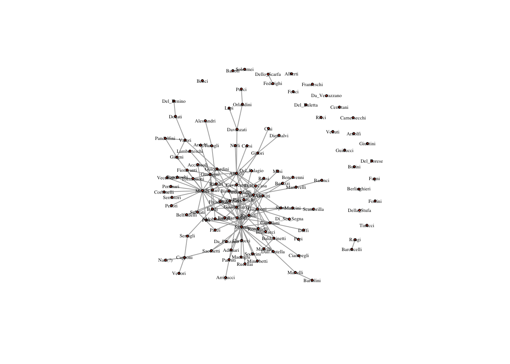
Based on this plot, which family do you expect is most central?
9.0.2 Degree Centrality
The simplest measure of centrality is degree centrality. It counts how many edges each node has - the most degree central actor is the one with the most ties.
Note: In a directed network, you will need to specify if in or out ties should be counted. These will be referred to as in or out degree respectively. If both are counted, then it is just called degree
Degree centrality is calculated using the degree function in R. It returns how many edges each node has.
degree(marriageNet) ## Acciaiuoli Adimari Alberti Albizzi Aldobrandini
## 2 3 0 14 2
## Alessandri Altoviti Dall'Antella Ardinghelli Arnolfi
## 1 6 3 5 0
## Arrighi Arrigucci Baldovinetti Barbadori Bardi
## 1 1 4 7 7
## Baroncelli Baronci Bartoli Bartolini Belfradelli
## 1 1 1 1 1
## Benci Bencivenni Del_Benino Benizzi Berlinghieri
## 0 1 1 1 0
## Bischeri Brancacci Bucelli Del_Buletta Busini
## 4 2 2 0 0
## Capponi Carducci Carnessecchi Della_Casa Castellani
## 4 2 0 2 7
## Cavalcanti Cerretani Ciai Ciampegli Corbinelli
## 3 0 1 1 1
## Corsi Davanzati Dietisalvi Doffi Donati
## 1 3 1 1 2
## Fagni Federighi Fenci Fioravanti Del_Forese
## 0 1 0 2 0
## Fortini Franceschi Frescobaldi Gianfigliazzi Ginori
## 0 0 6 10 4
## Giugni Giuntini Guadagni Guasconi Guicciardini
## 3 0 10 12 7
## Guiducci Lamberteschi Lapi Macinghi Mancini
## 0 1 1 1 1
## Manelli Manovelli Martelli Masi Medici
## 2 2 2 1 20
## Minerbetti Nasi(?) Nerli Orlandini Del_Palagio
## 1 1 1 2 2
## Panciatichi Pandolfini Da_Panzano Parenti Pazzi
## 7 2 2 1 2
## Pecori Pepi Peruzzi Pitti Popoleschi
## 1 1 15 2 2
## Portinari Pucci Raugi Ricasoli Ricci
## 1 1 1 10 0
## Ridolfi Rondinelli Rossi Rucellai Sacchetti
## 4 5 2 1 3
## Salviati Scambrilla Dello_Scarfa Scolari Di_Ser_Segna
## 3 1 1 3 1
## Serragli Serristori Soderini Solosmei Spini
## 2 1 1 1 4
## Strozzi Della_Stufa Tanagli Tinucci Tornabuoni
## 25 0 2 0 4
## Da_Uzzano Valori Vecchietti Velluti Da_Verrazzano
## 2 4 1 0 0
## Vettori
## 1Who is the most degree central?
We can assign the output to a variable in the network and size the nodes according to degree.
V(marriageNet)$degree <- degree(marriageNet) # assignment
plot(marriageNet, vertex.label.cex = .6, vertex.label.color = "black", vertex.size = V(marriageNet)$degree, vertex.label.cex = .2) # sized by degree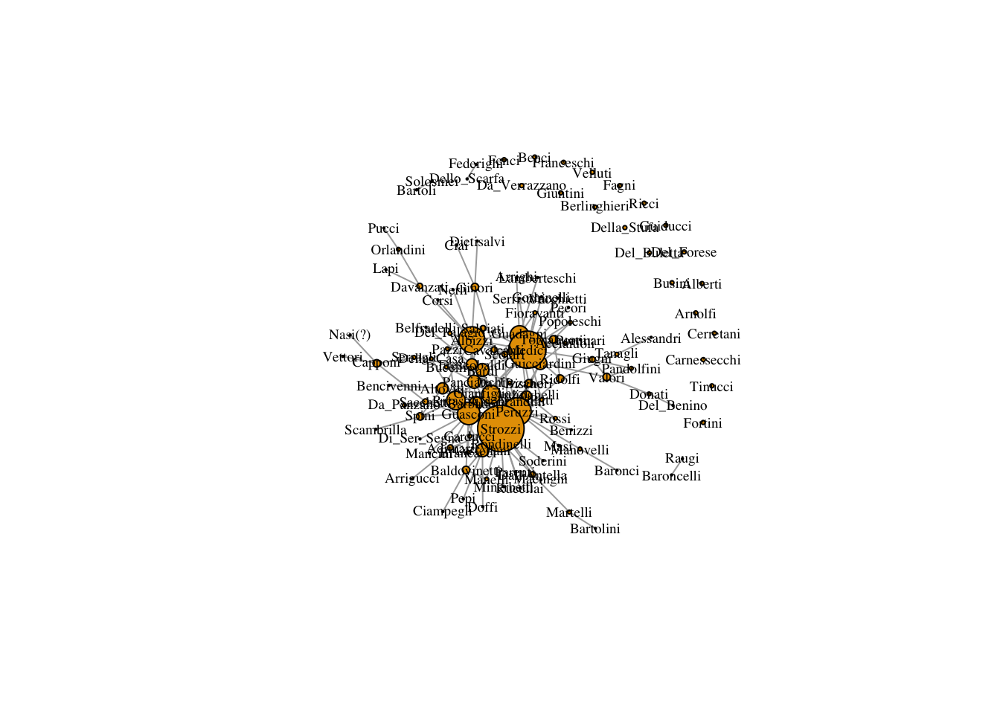
The problem is that the degree values are a little small to plot well. We can use a scalar to increase the value of the degree but maintain the ratio.
plot(marriageNet,
vertex.label.cex = .6,
vertex.label.color = "black",
vertex.size = V(marriageNet)$degree*3)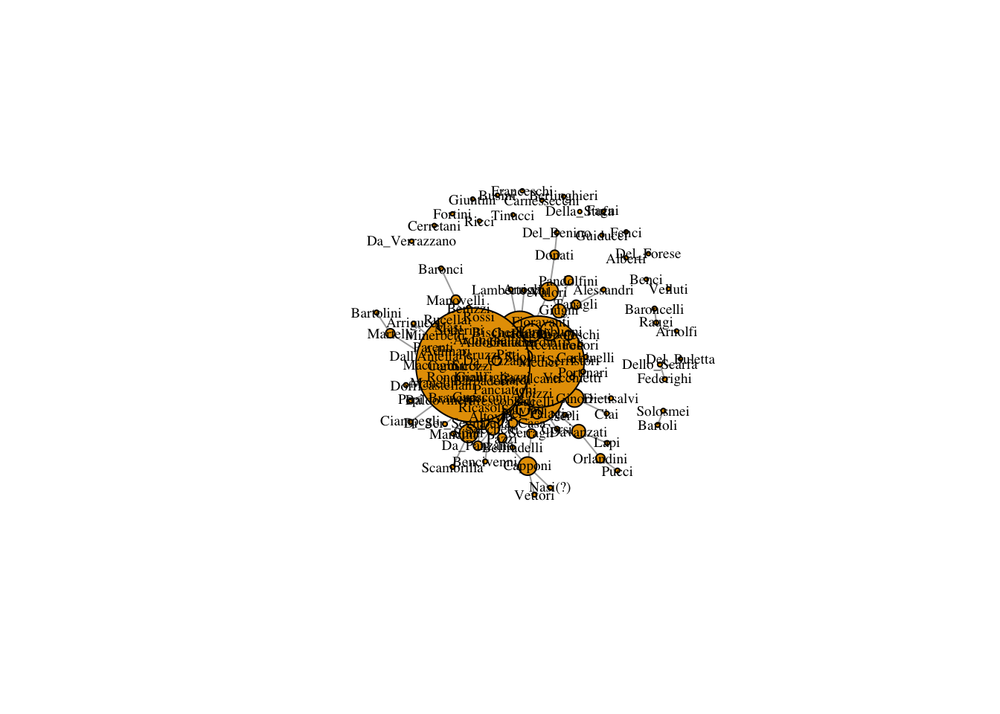
9.0.3 Betweenness Centrality
Betweenness centrality captures which nodes are important in the flow of the network. It makes use of the shortest paths in the network. A path is a series of adjacent nodes. For any two nodes we can find the shortest path between them, that is, the path with the least amount of total steps (or edges). If a node C is on a shortest path between A and B, then it means C is important to the efficient flow of goods between A and B. Without C, flows would have to take a longer route to get from A to B.
Thus, betweenness effectively counts how many shortest paths each node is on. The higher a node’s betweenness, the more important they are for the efficient flow of goods in a network.
In igraph, betweenness() computes betweenness in the network
betweenness(marriageNet, directed = FALSE)## Acciaiuoli Adimari Alberti Albizzi Aldobrandini
## 0.000000 93.009524 0.000000 856.436111 23.351190
## Alessandri Altoviti Dall'Antella Ardinghelli Arnolfi
## 0.000000 125.620147 174.000000 58.278211 0.000000
## Arrighi Arrigucci Baldovinetti Barbadori Bardi
## 0.000000 0.000000 95.613889 162.697344 280.248232
## Baroncelli Baronci Bartoli Bartolini Belfradelli
## 0.000000 0.000000 0.000000 0.000000 0.000000
## Benci Bencivenni Del_Benino Benizzi Berlinghieri
## 0.000000 0.000000 0.000000 0.000000 0.000000
## Bischeri Brancacci Bucelli Del_Buletta Busini
## 63.995238 0.000000 1.066667 0.000000 0.000000
## Capponi Carducci Carnessecchi Della_Casa Castellani
## 177.000000 5.009524 0.000000 11.577398 194.199423
## Cavalcanti Cerretani Ciai Ciampegli Corbinelli
## 125.467749 0.000000 0.000000 0.000000 0.000000
## Corsi Davanzati Dietisalvi Doffi Donati
## 0.000000 260.000000 0.000000 0.000000 88.000000
## Fagni Federighi Fenci Fioravanti Del_Forese
## 0.000000 0.000000 0.000000 5.951190 0.000000
## Fortini Franceschi Frescobaldi Gianfigliazzi Ginori
## 0.000000 0.000000 145.532681 187.915043 180.571429
## Giugni Giuntini Guadagni Guasconi Guicciardini
## 96.664141 0.000000 277.059921 583.679251 327.850305
## Guiducci Lamberteschi Lapi Macinghi Mancini
## 0.000000 0.000000 0.000000 0.000000 0.000000
## Manelli Manovelli Martelli Masi Medici
## 0.000000 88.000000 88.000000 0.000000 1029.609288
## Minerbetti Nasi(?) Nerli Orlandini Del_Palagio
## 0.000000 0.000000 0.000000 88.000000 0.000000
## Panciatichi Pandolfini Da_Panzano Parenti Pazzi
## 167.994891 0.000000 16.961111 0.000000 4.361111
## Pecori Pepi Peruzzi Pitti Popoleschi
## 0.000000 0.000000 604.369691 19.610606 0.000000
## Portinari Pucci Raugi Ricasoli Ricci
## 0.000000 0.000000 0.000000 205.097092 0.000000
## Ridolfi Rondinelli Rossi Rucellai Sacchetti
## 213.727670 43.186597 0.000000 0.000000 197.651515
## Salviati Scambrilla Dello_Scarfa Scolari Di_Ser_Segna
## 35.571429 0.000000 0.000000 19.801010 0.000000
## Serragli Serristori Soderini Solosmei Spini
## 81.000000 0.000000 0.000000 0.000000 89.500000
## Strozzi Della_Stufa Tanagli Tinucci Tornabuoni
## 1369.979110 0.000000 88.000000 0.000000 23.831746
## Da_Uzzano Valori Vecchietti Velluti Da_Verrazzano
## 3.666667 202.285859 0.000000 0.000000 0.000000
## Vettori
## 0.000000We can again assign the output of betweenness() to a variable in the network and size the nodes according to it.
V(marriageNet)$betweenness <- betweenness(marriageNet, directed = F) # assignment
plot(marriageNet,
vertex.label.cex = .6,
vertex.label.color = "black",
vertex.size = V(marriageNet)$betweenness) # sized by betweenness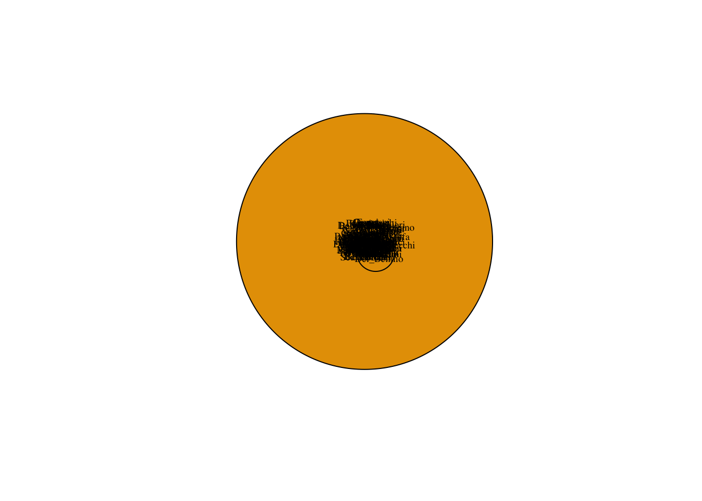
Betweenness centrality can be very large. It is often helpful to normalize it by dividing by the maximum and multiplying by some scalar when plotting.
plot(marriageNet,
vertex.label.cex = .6,
vertex.label.color = "black",
vertex.size = V(marriageNet)$betweenness/max(V(marriageNet)$betweenness) * 20)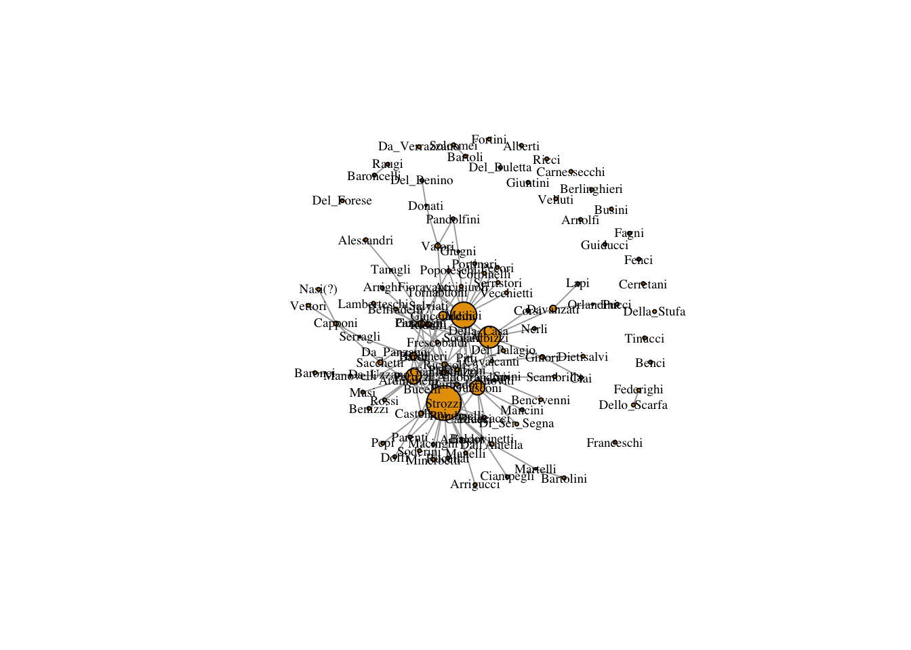
9.0.4 Closeness Centrality
With closeness centrality we again make use of the shortest paths between nodes. We measure the distance between two nodes as the length of the shortest path between them. Farness, for a given node, is the average distance from that node to all other nodes. Closeness is then the reciprocal of farness (1/farness).
closeness(marriageNet)## Acciaiuoli Adimari Alberti Albizzi Aldobrandini
## 3.036745e-04 3.052503e-04 7.496252e-05 3.095975e-04 3.044140e-04
## Alessandri Altoviti Dall'Antella Ardinghelli Arnolfi
## 2.918856e-04 3.065604e-04 3.035823e-04 3.075977e-04 7.496252e-05
## Arrighi Arrigucci Baldovinetti Barbadori Bardi
## 2.990431e-04 2.972652e-04 3.060912e-04 3.068426e-04 3.088326e-04
## Baroncelli Baronci Bartoli Bartolini Belfradelli
## 7.561437e-05 2.941176e-04 7.561437e-05 2.883506e-04 2.985966e-04
## Benci Bencivenni Del_Benino Benizzi Berlinghieri
## 7.496252e-05 2.985075e-04 2.860412e-04 3.017502e-04 7.496252e-05
## Bischeri Brancacci Bucelli Del_Buletta Busini
## 3.077870e-04 3.058104e-04 3.030303e-04 7.496252e-05 7.496252e-05
## Capponi Carducci Carnessecchi Della_Casa Castellani
## 2.984184e-04 3.050641e-04 7.496252e-05 3.041363e-04 3.071253e-04
## Cavalcanti Cerretani Ciai Ciampegli Corbinelli
## 3.073141e-04 7.496252e-05 2.958580e-04 2.980626e-04 3.023889e-04
## Corsi Davanzati Dietisalvi Doffi Donati
## 3.013864e-04 3.019324e-04 2.958580e-04 2.990431e-04 2.934272e-04
## Fagni Federighi Fenci Fioravanti Del_Forese
## 7.496252e-05 7.561437e-05 7.496252e-05 3.033981e-04 7.496252e-05
## Fortini Franceschi Frescobaldi Gianfigliazzi Ginori
## 7.496252e-05 7.496252e-05 3.066544e-04 3.097893e-04 3.037667e-04
## Giugni Giuntini Guadagni Guasconi Guicciardini
## 3.031222e-04 7.496252e-05 3.071253e-04 3.110420e-04 3.084516e-04
## Guiducci Lamberteschi Lapi Macinghi Mancini
## 7.496252e-05 2.990431e-04 2.941176e-04 3.031222e-04 3.027551e-04
## Manelli Manovelli Martelli Masi Medici
## 3.033060e-04 3.019324e-04 2.958580e-04 3.017502e-04 3.106555e-04
## Minerbetti Nasi(?) Nerli Orlandini Del_Palagio
## 3.031222e-04 2.907822e-04 3.013864e-04 2.942908e-04 3.044140e-04
## Panciatichi Pandolfini Da_Panzano Parenti Pazzi
## 3.090235e-04 2.964720e-04 3.013864e-04 3.031222e-04 3.010235e-04
## Pecori Pepi Peruzzi Pitti Popoleschi
## 3.023889e-04 2.990431e-04 3.099814e-04 3.067485e-04 3.027551e-04
## Portinari Pucci Raugi Ricasoli Ricci
## 3.023889e-04 2.868617e-04 7.561437e-05 3.072197e-04 7.496252e-05
## Ridolfi Rondinelli Rossi Rucellai Sacchetti
## 3.075031e-04 3.067485e-04 3.023889e-04 3.031222e-04 3.042288e-04
## Salviati Scambrilla Dello_Scarfa Scolari Di_Ser_Segna
## 3.036745e-04 2.962085e-04 7.561437e-05 3.044140e-04 3.027551e-04
## Serragli Serristori Soderini Solosmei Spini
## 3.013864e-04 3.023889e-04 3.031222e-04 7.561437e-05 3.041363e-04
## Strozzi Della_Stufa Tanagli Tinucci Tornabuoni
## 3.114295e-04 7.496252e-05 2.995806e-04 7.496252e-05 3.047851e-04
## Da_Uzzano Valori Vecchietti Velluti Da_Verrazzano
## 3.037667e-04 3.010235e-04 3.023889e-04 7.496252e-05 7.496252e-05
## Vettori
## 2.907822e-04We assign it to a node variable and plot the network, adjusting node size by closeness.
V(marriageNet)$closeness <- closeness(marriageNet)plot(marriageNet,
vertex.label.cex = .6,
vertex.label.color = "black",
vertex.size = V(marriageNet)$closeness/max(V(marriageNet)$closeness) * 20)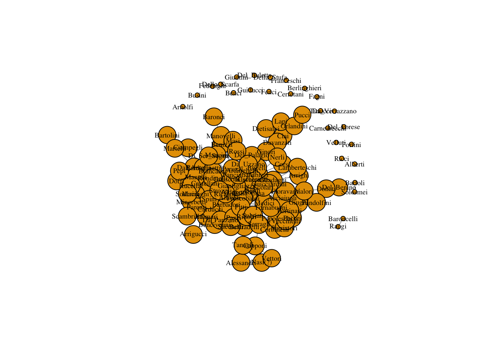
9.1 Eigenvector Centrality
Degree centrality only takes into account the number of edges for each node, but it leaves out information about ego’s alters.
However, we might think that power comes from being tied to powerful people. If A and B have the same degree centrality, but A is tied to all high degree people and B is tied to all low degree people, then intuitively we want to see A with a higher score than B.
Eigenvector centrality takes into account alters’ power. It is calculated a little bit differently in igraph. It produces a list object and we need to extract only the vector of centrality values.
evcent(marriageNet)$vector## Acciaiuoli Adimari Alberti Albizzi Aldobrandini
## 1.399699e-01 1.831812e-01 1.096222e-17 5.323660e-01 1.509870e-01
## Alessandri Altoviti Dall'Antella Ardinghelli Arnolfi
## 4.503879e-03 3.372469e-01 1.893404e-01 4.000982e-01 1.096222e-17
## Arrighi Arrigucci Baldovinetti Barbadori Bardi
## 4.596917e-02 2.433106e-02 2.497482e-01 3.547849e-01 4.080706e-01
## Baroncelli Baronci Bartoli Bartolini Belfradelli
## 1.014944e-17 1.421582e-02 1.294541e-17 3.400431e-03 4.564759e-02
## Benci Bencivenni Del_Benino Benizzi Berlinghieri
## 1.096222e-17 4.479485e-02 1.231075e-03 1.051384e-01 1.096222e-17
## Bischeri Brancacci Bucelli Del_Buletta Busini
## 3.348147e-01 2.232934e-01 1.218222e-01 1.096222e-17 1.096222e-17
## Capponi Carducci Carnessecchi Della_Casa Castellani
## 2.844521e-02 1.799494e-01 1.096222e-17 1.414314e-01 4.238792e-01
## Cavalcanti Cerretani Ciai Ciampegli Corbinelli
## 2.359640e-01 1.096222e-17 1.405106e-02 3.317283e-02 8.908790e-02
## Corsi Davanzati Dietisalvi Doffi Donati
## 7.071156e-02 7.332195e-02 1.405106e-02 5.630179e-02 9.268390e-03
## Fagni Federighi Fenci Fioravanti Del_Forese
## 1.096222e-17 9.497930e-18 1.096222e-17 1.350571e-01 1.096222e-17
## Fortini Franceschi Frescobaldi Gianfigliazzi Ginori
## 1.096222e-17 1.096222e-17 3.436670e-01 7.162939e-01 1.057862e-01
## Giugni Giuntini Guadagni Guasconi Guicciardini
## 1.011873e-01 1.096222e-17 3.460880e-01 6.811084e-01 3.830752e-01
## Guiducci Lamberteschi Lapi Macinghi Mancini
## 1.096222e-17 4.596917e-02 9.738994e-03 1.328251e-01 9.046827e-02
## Manelli Manovelli Martelli Masi Medici
## 1.659979e-01 1.070266e-01 2.560082e-02 1.051384e-01 6.707160e-01
## Minerbetti Nasi(?) Nerli Orlandini Del_Palagio
## 1.328251e-01 3.778238e-03 7.071156e-02 9.913900e-03 1.383317e-01
## Panciatichi Pandolfini Da_Panzano Parenti Pazzi
## 5.090917e-01 2.254509e-02 9.046017e-02 1.328251e-01 9.020762e-02
## Pecori Pepi Peruzzi Pitti Popoleschi
## 8.908790e-02 5.630179e-02 7.915554e-01 2.219130e-01 1.134529e-01
## Portinari Pucci Raugi Ricasoli Ricci
## 8.908790e-02 1.316815e-03 9.736396e-18 5.324287e-01 1.096222e-17
## Ridolfi Rondinelli Rossi Rucellai Sacchetti
## 2.507818e-01 3.998861e-01 1.582815e-01 1.328251e-01 1.486187e-01
## Salviati Scambrilla Dello_Scarfa Scolari Di_Ser_Segna
## 1.467173e-01 2.785107e-02 1.282545e-17 1.367356e-01 9.046827e-02
## Serragli Serristori Soderini Solosmei Spini
## 5.798025e-02 8.908790e-02 1.328251e-01 1.091719e-17 2.096823e-01
## Strozzi Della_Stufa Tanagli Tinucci Tornabuoni
## 1.000000e+00 1.096222e-17 3.390835e-02 1.096222e-17 1.834366e-01
## Da_Uzzano Valori Vecchietti Velluti Da_Verrazzano
## 1.593404e-01 6.854784e-02 8.908790e-02 1.096222e-17 1.096222e-17
## Vettori
## 3.778238e-03Then we can assign that vector to our network and plot it.
V(marriageNet)$eigenvector <- evcent(marriageNet)$vector
plot(marriageNet,
vertex.label.cex = .6,
vertex.label.color = "black",
vertex.size = V(marriageNet)$eigenvector/max(V(marriageNet)$eigenvector) * 20)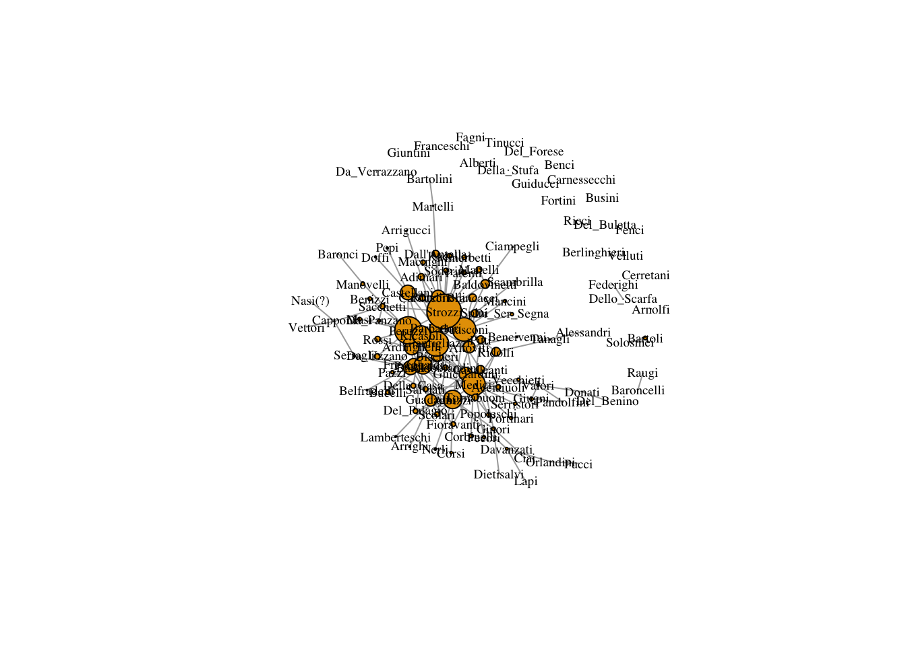
9.1.1 Measure Correlations
Most of these measures are highly correlated, meaning they don’t necessarily capture unique aspects of pwoer. However, the amount of correlation depends on the network structure. Let’s see how the correlations between centrality measures looks in the Florentine Family network. cor.test(x,y) performs a simple correlation test between two vectors.
cor.test(V(marriageNet)$degree, V(marriageNet)$betweenness)##
## Pearson's product-moment correlation
##
## data: V(marriageNet)$degree and V(marriageNet)$betweenness
## t = 29.055, df = 114, p-value < 2.2e-16
## alternative hypothesis: true correlation is not equal to 0
## 95 percent confidence interval:
## 0.9124632 0.9571526
## sample estimates:
## cor
## 0.9386317cor.test(V(marriageNet)$degree, V(marriageNet)$eigenvector) ##
## Pearson's product-moment correlation
##
## data: V(marriageNet)$degree and V(marriageNet)$eigenvector
## t = 25.9, df = 114, p-value < 2.2e-16
## alternative hypothesis: true correlation is not equal to 0
## 95 percent confidence interval:
## 0.8926691 0.9471847
## sample estimates:
## cor
## 0.9245214cor.test(V(marriageNet)$degree, V(marriageNet)$closeness)##
## Pearson's product-moment correlation
##
## data: V(marriageNet)$degree and V(marriageNet)$closeness
## t = 4.2754, df = 114, p-value = 3.981e-05
## alternative hypothesis: true correlation is not equal to 0
## 95 percent confidence interval:
## 0.2031884 0.5188843
## sample estimates:
## cor
## 0.3717342cor.test(V(marriageNet)$betweenness, V(marriageNet)$eigenvector)##
## Pearson's product-moment correlation
##
## data: V(marriageNet)$betweenness and V(marriageNet)$eigenvector
## t = 13.93, df = 114, p-value < 2.2e-16
## alternative hypothesis: true correlation is not equal to 0
## 95 percent confidence interval:
## 0.7147869 0.8526169
## sample estimates:
## cor
## 0.7936739cor.test(V(marriageNet)$betweenness, V(marriageNet)$closeness)##
## Pearson's product-moment correlation
##
## data: V(marriageNet)$betweenness and V(marriageNet)$closeness
## t = 2.6627, df = 114, p-value = 0.008872
## alternative hypothesis: true correlation is not equal to 0
## 95 percent confidence interval:
## 0.06241416 0.40636643
## sample estimates:
## cor
## 0.2419773cor.test(V(marriageNet)$betweenness, V(marriageNet)$date)##
## Pearson's product-moment correlation
##
## data: V(marriageNet)$betweenness and V(marriageNet)$date
## t = -0.32853, df = 97, p-value = 0.7432
## alternative hypothesis: true correlation is not equal to 0
## 95 percent confidence interval:
## -0.2292421 0.1651598
## sample estimates:
## cor
## -0.033339What do we learn?
9.1.2 Centralization and Degree Distributions
To understand the measures further, we can look at their distributions. This will tell us roughly how many nodes have centralities of a given value.
# fitting a degree distribution on the log-log scale
alter_hist = table(degree(marriageNet))
vals = as.numeric(names(alter_hist))
vals = vals[2:length(vals)]
alter_hist = alter_hist[2:length(alter_hist)]
df = data.frame(Vals = log(vals), Hist = log(as.numeric(alter_hist)), stringsAsFactors = F)
# plot log-log degree distribution
plot(Hist ~ Vals, data = df)
# regression line
abline(lm(Hist ~ Vals, data = df))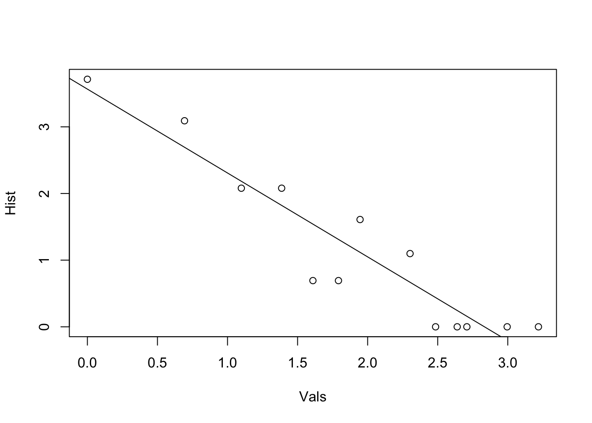 Why do your friends have more friends than you do? (TK)
# degrees of your friends
neighbor_degrees = knn(marriageNet)$knn
df = data.frame(Degrees = degree(marriageNet), Neighbor_degrees = neighbor_degrees)
# plot neighbor degrees vs. ego degress
plot(Neighbor_degrees ~ Degrees, data = df)
abline(lm(Neighbor_degrees ~ Degrees, data = df))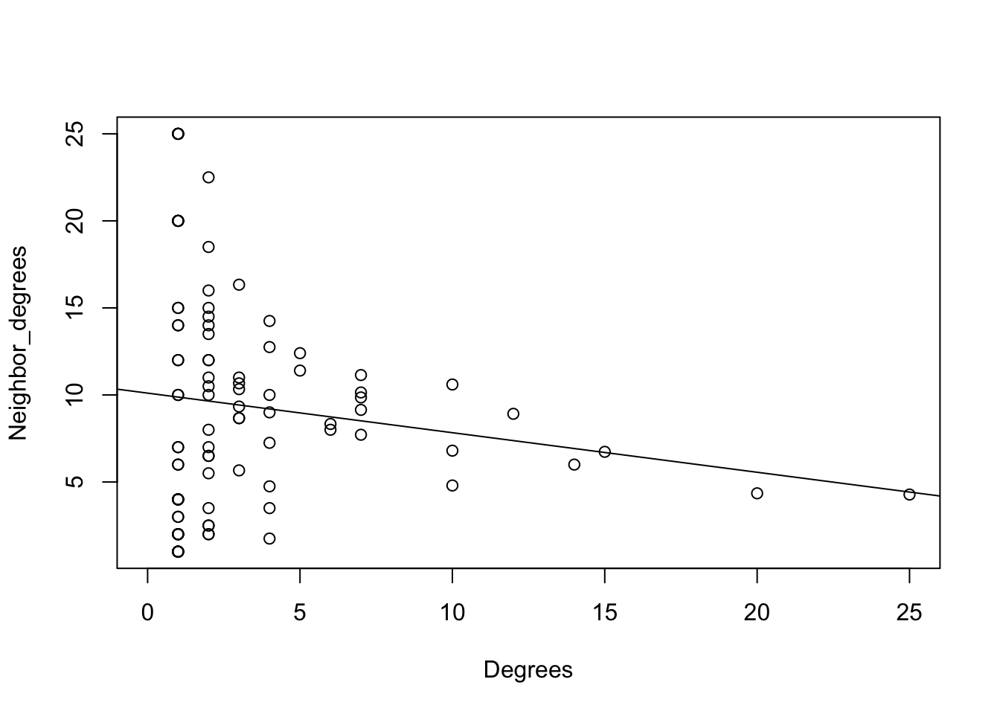
We can see that most nodes in the marriage network have low betweenness centrality, and only one node has more than 40 betweenness. Degree distributions tend to be right-skewed; that is, only a few nodes in most networks have most of the ties. Evenly distributed degree is much rarer.
Finally centralization measures the extent to which a network is centered around a single node. The closer a network gets to looking like a star, the more centralization will be.
centralization.degree(marriageNet)## $res
## [1] 2 3 0 14 2 1 6 3 5 0 1 1 4 7 7 1 1 1 1 1 0 1 1
## [24] 1 0 4 2 2 0 0 4 2 0 2 7 3 0 1 1 1 1 3 1 1 2 0
## [47] 1 0 2 0 0 0 6 10 4 3 0 10 12 7 0 1 1 1 1 2 2 2 1
## [70] 20 1 1 1 2 2 7 2 2 1 2 1 1 15 2 2 1 1 1 10 0 4 5
## [93] 2 1 3 3 1 1 3 1 2 1 1 1 4 25 0 2 0 4 2 4 1 0 0
## [116] 1
##
## $centralization
## [1] 0.1938531
##
## $theoretical_max
## [1] 13340centralization.betweenness(marriageNet)## $res
## [1] 0.000000 93.009524 0.000000 856.436111 23.351190
## [6] 0.000000 125.620147 174.000000 58.278211 0.000000
## [11] 0.000000 0.000000 95.613889 162.697344 280.248232
## [16] 0.000000 0.000000 0.000000 0.000000 0.000000
## [21] 0.000000 0.000000 0.000000 0.000000 0.000000
## [26] 63.995238 0.000000 1.066667 0.000000 0.000000
## [31] 177.000000 5.009524 0.000000 11.577398 194.199423
## [36] 125.467749 0.000000 0.000000 0.000000 0.000000
## [41] 0.000000 260.000000 0.000000 0.000000 88.000000
## [46] 0.000000 0.000000 0.000000 5.951190 0.000000
## [51] 0.000000 0.000000 145.532681 187.915043 180.571429
## [56] 96.664141 0.000000 277.059921 583.679251 327.850305
## [61] 0.000000 0.000000 0.000000 0.000000 0.000000
## [66] 0.000000 88.000000 88.000000 0.000000 1029.609288
## [71] 0.000000 0.000000 0.000000 88.000000 0.000000
## [76] 167.994891 0.000000 16.961111 0.000000 4.361111
## [81] 0.000000 0.000000 604.369691 19.610606 0.000000
## [86] 0.000000 0.000000 0.000000 205.097092 0.000000
## [91] 213.727670 43.186597 0.000000 0.000000 197.651515
## [96] 35.571429 0.000000 0.000000 19.801010 0.000000
## [101] 81.000000 0.000000 0.000000 0.000000 89.500000
## [106] 1369.979110 0.000000 88.000000 0.000000 23.831746
## [111] 3.666667 202.285859 0.000000 0.000000 0.000000
## [116] 0.000000
##
## $centralization
## [1] 0.1985031
##
## $theoretical_max
## [1] 753825centralization.evcent(marriageNet)## $vector
## [1] 1.399699e-01 1.831812e-01 3.023137e-17 5.323660e-01 1.509870e-01
## [6] 4.503879e-03 3.372469e-01 1.893404e-01 4.000982e-01 3.023137e-17
## [11] 4.596917e-02 2.433106e-02 2.497482e-01 3.547849e-01 4.080706e-01
## [16] 2.563631e-17 1.421582e-02 2.767765e-17 3.400431e-03 4.564759e-02
## [21] 3.023137e-17 4.479485e-02 1.231075e-03 1.051384e-01 3.023137e-17
## [26] 3.348147e-01 2.232934e-01 1.218222e-01 3.023137e-17 3.023137e-17
## [31] 2.844521e-02 1.799494e-01 3.023137e-17 1.414314e-01 4.238792e-01
## [36] 2.359640e-01 3.023137e-17 1.405106e-02 3.317283e-02 8.908790e-02
## [41] 7.071156e-02 7.332195e-02 1.405106e-02 5.630179e-02 9.268390e-03
## [46] 3.023137e-17 3.059531e-17 3.023137e-17 1.350571e-01 3.023137e-17
## [51] 3.023137e-17 3.023137e-17 3.436670e-01 7.162939e-01 1.057862e-01
## [56] 1.011873e-01 3.023137e-17 3.460880e-01 6.811084e-01 3.830752e-01
## [61] 3.023137e-17 4.596917e-02 9.738994e-03 1.328251e-01 9.046827e-02
## [66] 1.659979e-01 1.070266e-01 2.560082e-02 1.051384e-01 6.707160e-01
## [71] 1.328251e-01 3.778238e-03 7.071156e-02 9.913900e-03 1.383317e-01
## [76] 5.090917e-01 2.254509e-02 9.046017e-02 1.328251e-01 9.020762e-02
## [81] 8.908790e-02 5.630179e-02 7.915554e-01 2.219130e-01 1.134529e-01
## [86] 8.908790e-02 1.316815e-03 1.614634e-17 5.324287e-01 3.023137e-17
## [91] 2.507818e-01 3.998861e-01 1.582815e-01 1.328251e-01 1.486187e-01
## [96] 1.467173e-01 2.785107e-02 2.118500e-17 1.367356e-01 9.046827e-02
## [101] 5.798025e-02 8.908790e-02 1.328251e-01 1.941844e-17 2.096823e-01
## [106] 1.000000e+00 3.023137e-17 3.390835e-02 3.023137e-17 1.834366e-01
## [111] 1.593404e-01 6.854784e-02 8.908790e-02 3.023137e-17 3.023137e-17
## [116] 3.778238e-03
##
## $value
## [1] 7.528699
##
## $options
## $options$bmat
## [1] "I"
##
## $options$n
## [1] 116
##
## $options$which
## [1] "LA"
##
## $options$nev
## [1] 1
##
## $options$tol
## [1] 0
##
## $options$ncv
## [1] 0
##
## $options$ldv
## [1] 0
##
## $options$ishift
## [1] 1
##
## $options$maxiter
## [1] 1000
##
## $options$nb
## [1] 1
##
## $options$mode
## [1] 1
##
## $options$start
## [1] 1
##
## $options$sigma
## [1] 0
##
## $options$sigmai
## [1] 0
##
## $options$info
## [1] 0
##
## $options$iter
## [1] 2
##
## $options$nconv
## [1] 1
##
## $options$numop
## [1] 30
##
## $options$numopb
## [1] 0
##
## $options$numreo
## [1] 21
##
##
## $centralization
## [1] 0.8766139
##
## $theoretical_max
## [1] 114centralization.closeness(marriageNet)## $res
## [1] 0.034922563 0.035103785 0.008620690 0.035603715 0.035007610
## [6] 0.033566842 0.035254445 0.034911961 0.035373731 0.008620690
## [11] 0.034389952 0.034185493 0.035200490 0.035286898 0.035515750
## [16] 0.008695652 0.033823529 0.008695652 0.033160323 0.034338609
## [21] 0.008620690 0.034328358 0.032894737 0.034701267 0.008620690
## [26] 0.035395506 0.035168196 0.034848485 0.008620690 0.008620690
## [31] 0.034318114 0.035082367 0.008620690 0.034975669 0.035319410
## [36] 0.035341119 0.008620690 0.034023669 0.034277198 0.034774720
## [41] 0.034659433 0.034722222 0.034023669 0.034389952 0.033744131
## [46] 0.008620690 0.008695652 0.008620690 0.034890777 0.008620690
## [51] 0.008620690 0.008620690 0.035265256 0.035625774 0.034933171
## [56] 0.034859048 0.008620690 0.035319410 0.035769829 0.035471931
## [61] 0.008620690 0.034389952 0.033823529 0.034859048 0.034816833
## [66] 0.034880194 0.034722222 0.034023669 0.034701267 0.035725381
## [71] 0.034859048 0.033439953 0.034659433 0.033843437 0.035007610
## [76] 0.035537701 0.034094278 0.034659433 0.034859048 0.034617700
## [81] 0.034774720 0.034389952 0.035647861 0.035276074 0.034816833
## [86] 0.034774720 0.032989099 0.008695652 0.035330261 0.008620690
## [91] 0.035362854 0.035276074 0.034774720 0.034859048 0.034986310
## [96] 0.034922563 0.034063981 0.008695652 0.035007610 0.034816833
## [101] 0.034659433 0.034774720 0.034859048 0.008695652 0.034975669
## [106] 0.035814388 0.008620690 0.034451768 0.008620690 0.035050290
## [111] 0.034933171 0.034617700 0.034774720 0.008620690 0.008620690
## [116] 0.033439953
##
## $centralization
## [1] 0.01402947
##
## $theoretical_max
## [1] 57.248919.2 Reach
reach_n =function(x, n = 2){
r=vector(length=vcount(x))
for (i in 1:vcount(x)){
neighb =neighborhood(x, n, nodes=i)
ni=unlist(neighb)
l=length(ni)
r[i]=(l)/vcount(x)
}
return(r)
}
two_reach = reach_n(marriageNet, 2)
plot(marriageNet, vertex.size = two_reach * 10, vertex.label.cex = .4, vertex.label.color = "black", vertex.color = "tomato")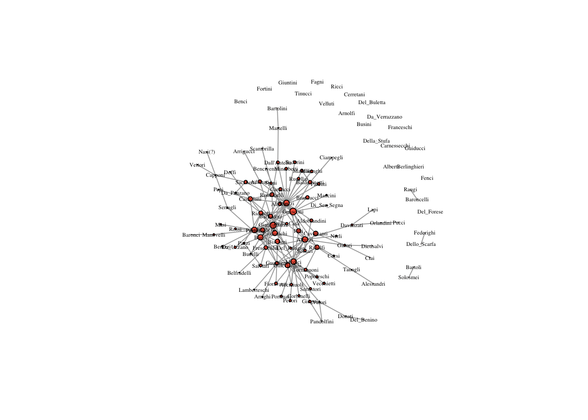
three_reach = reach_n(marriageNet, 3)
plot(marriageNet, vertex.size = three_reach * 10, vertex.label.cex = .4, vertex.label.color = "black", vertex.color = "tomato")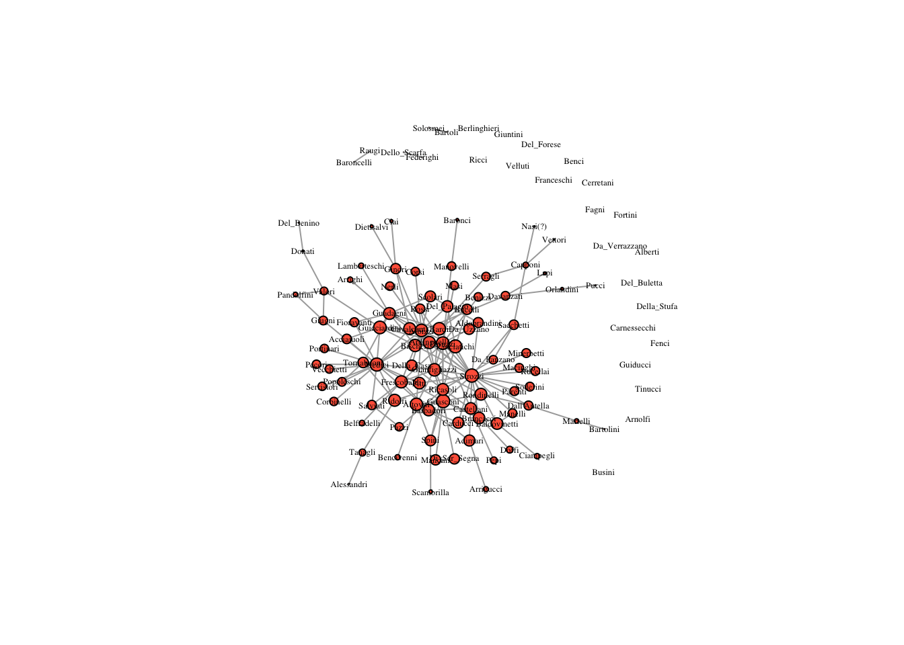
four_reach = reach_n(marriageNet, 4)
plot(marriageNet, vertex.size = four_reach * 10, vertex.label.cex = .4, vertex.label.color = "black", vertex.color = "tomato")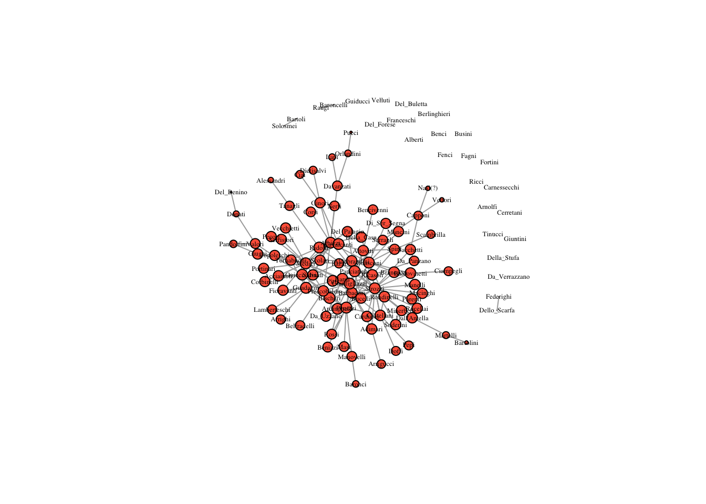
five_reach = reach_n(marriageNet, 5)
plot(marriageNet, vertex.size = five_reach * 10, vertex.label.cex = .4, vertex.label.color = "black", vertex.color = "tomato")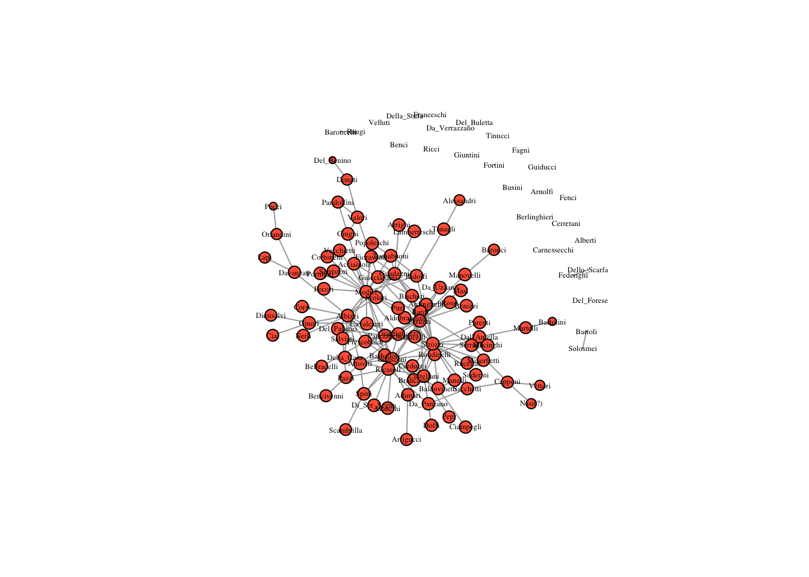
distance_weighted_reach=function(x){
distances=shortest.paths(x) #create matrix of geodesic distances
diag(distances)=1 # replace the diagonal with 1s
weights=1/distances # take the reciprocal of distances
return(apply(weights,1,sum)) # sum for each node (row)
}
dw_reach = distance_weighted_reach(marriageNet)
dw_reach = dw_reach/max(dw_reach)
plot(marriageNet, vertex.size = dw_reach * 10, vertex.label.cex = .4, vertex.label.color = "black", vertex.color = "tomato")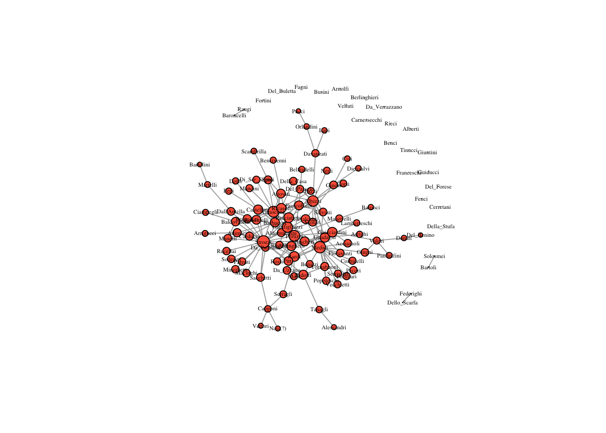